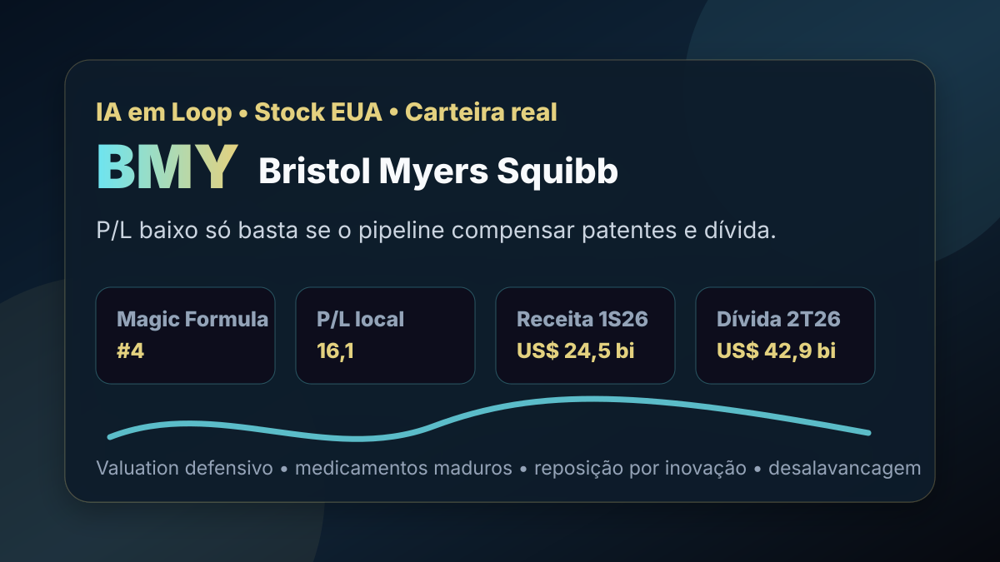

02/09: BMY, Bristol Myers e o desconto que exige pipeline
Bristol Myers Squibb está na carteira real de Magic Formula Dolarizada e segue barata nos múltiplos locais. A pergunta central é direta: o desconto remunera o risco de patentes e dívida, ou esconde uma farmacêutica que precisa provar renovação de portfólio?

Em farmacêuticas, valuation baixo só vira margem de segurança quando a reposição de receita supera perdas de exclusividade, pressão de preço e alavancagem.
Resposta curta: desconto real, mas dependente de execução científica
Na base dolarizada local com data-base de 11/07/2026, BMY aparece em 4º lugar na Magic Formula EUA e em 19º lugar no ranking BESST e Buffett EUA. A base mostra preço de US$ 57,58, P/L de 16,13, P/L projetado de 9,29, P/VP de 5,86, EV/EBITDA de 8,09, ROE de 38,73%, dividend yield de 4,38% e earnings yield de 6,20%.
A perspectiva de custódia reforça a necessidade de acompanhamento. BMY aparece como posição da carteira Magic Formula Dolarizada, mas quantidades, preço médio e detalhes de execução ficam fora da página pública. Isso não é recomendação; é uma leitura educacional de uma tese que precisa ser testada contra pipeline, vencimento de patentes, geração de caixa e dívida.
O que os documentos verificados mostram
A consulta à SEC mostra a Bristol Myers Squibb Co, CIK 0000014272, classificada como preparação farmacêutica. O 10-Q arquivado em 30/07/2026, referente ao trimestre encerrado em 30/06/2026, informa US$ 12,973 bilhões de receitas no 2T26, contra US$ 12,269 bilhões no 2T25.
No mesmo trimestre, o lucro líquido foi de US$ 3,317 bilhões, acima dos US$ 1,310 bilhão do 2T25. No semestre, as receitas chegaram a US$ 24,462 bilhões e o lucro líquido somou US$ 5,994 bilhões. O balanço de 30/06/2026 mostrava US$ 87,634 bilhões em ativos, US$ 65,315 bilhões em passivos, US$ 22,319 bilhões em patrimônio líquido, US$ 42,861 bilhões em dívida de longo prazo e US$ 8,722 bilhões em caixa.
O ponto decisivo é a escala de reinvestimento. A companhia registrou US$ 2,959 bilhões em pesquisa e desenvolvimento no 2T26 e US$ 5,608 bilhões no semestre. Para uma farmacêutica madura, esse gasto não é detalhe: é a ponte entre medicamentos atuais, perda de exclusividade futura e novos produtos capazes de sustentar receita.
| Métrica verificada | Período/fonte | Valor | Leitura |
|---|---|---|---|
| Receitas | SEC 2T26 | US$ 12,973 bi | crescimento sobre o 2T25 |
| Lucro líquido | SEC 2T26 | US$ 3,317 bi | recuperação de lucro, mas exige normalização |
| Pesquisa e desenvolvimento | SEC 1S26 | US$ 5,608 bi | combustível do pipeline |
| Dívida de longo prazo | SEC 30/06/2026 | US$ 42,861 bi | alavancagem relevante para a tese |
| Caixa | SEC 30/06/2026 | US$ 8,722 bi | liquidez ajuda, mas não elimina o risco |
Por que Bristol Myers importa para o investidor
BMY combina três elementos que costumam atrair o investidor de valor: lucro relevante, dividendo visível e múltiplos menores que os de muitas empresas de crescimento. O mercado, porém, cobra desconto de farmacêuticas maduras quando há dúvida sobre patentes, pressão regulatória de preços, integração de aquisições e capacidade de transformar pesquisa em vendas futuras.
Por isso, a leitura não pode parar no P/L. O P/L projetado abaixo do P/L corrente sugere expectativa de lucro melhor à frente, mas a dívida líquida e a necessidade permanente de pesquisa reduzem o espaço para erro. O ranking encontra preço razoável para retorno sobre patrimônio alto; a análise precisa perguntar se esse retorno é sustentável quando produtos antigos perdem proteção e produtos novos precisam ganhar tração.
BMY é uma posição pequena, com valuation defensivo e presença relevante na Magic Formula. A tese melhora se a empresa converter pesquisa em crescimento, preservar caixa, reduzir alavancagem e manter dividendos sem sacrificar investimento. A tese piora se a renovação de portfólio atrasar ou se a dívida limitar flexibilidade.
O que favorece e o que ameaça a tese
Favoráveis
• Presença simultânea nos rankings dolarizados.
• P/L local moderado e P/L projetado menor.
• Dividendo acima de 4% na base local.
• Receita e lucro líquido fortes no 2T26.
• Gasto robusto em pesquisa e desenvolvimento.
Desfavoráveis
• Farmacêuticas maduras sofrem com perda de exclusividade.
• Dívida de longo prazo elevada frente ao patrimônio.
• P/VP alto exige ROE persistente.
• Pressão regulatória pode comprimir preços.
• Pipeline pode atrasar, falhar ou exigir novas aquisições.
Checklist para acompanhar daqui em diante
| Ponto | O que monitorar | Se piorar |
|---|---|---|
| Pipeline | aprovações, estudos, lançamentos e crescimento de novos produtos | o desconto pode ser justificado |
| Patentes | perda de exclusividade e erosão de receitas maduras | receita futura fica mais frágil |
| Dívida | dívida líquida, juros e desalavancagem | dividendos e recompras perdem espaço |
| Caixa | geração operacional e conversão de lucro em caixa | o lucro contábil vira sinal menos confiável |
| Valuation | P/L normalizado, P/VP e dividend yield | preço baixo pode refletir queda estrutural |
Conclusão
A resposta para a pergunta do post é: Bristol Myers parece descontada o suficiente para justificar acompanhamento, mas não para ignorar o risco de renovação do portfólio. Os números do 2T26 mostram receita, lucro e pesquisa relevantes; os rankings mostram valuation atrativo; a dívida e o ciclo de patentes explicam por que o mercado exige desconto.
Na régua do IA em Loop, BMY é uma tese de valor farmacêutico: boa quando lucro, caixa, pipeline e desalavancagem caminham juntos; perigosa quando o investidor compra apenas dividendo e P/L sem cobrar evidência de crescimento futuro.